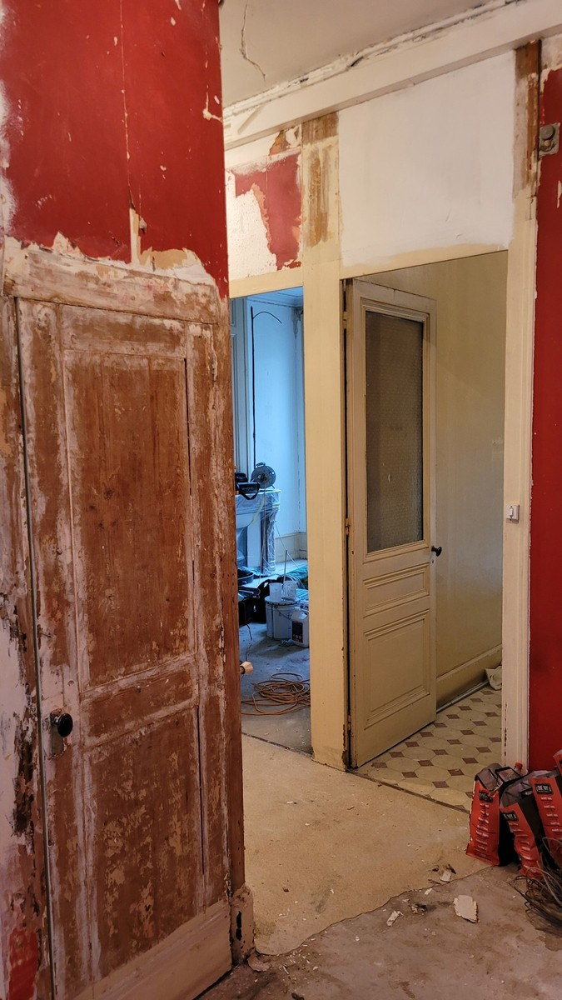
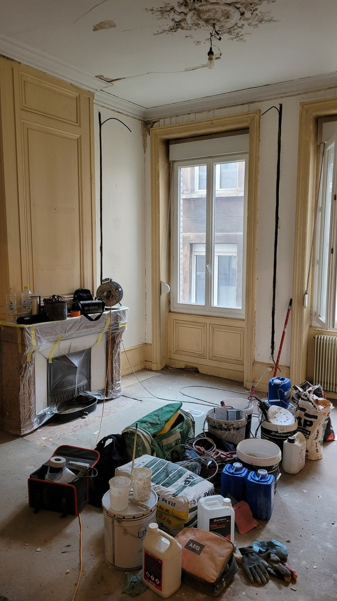
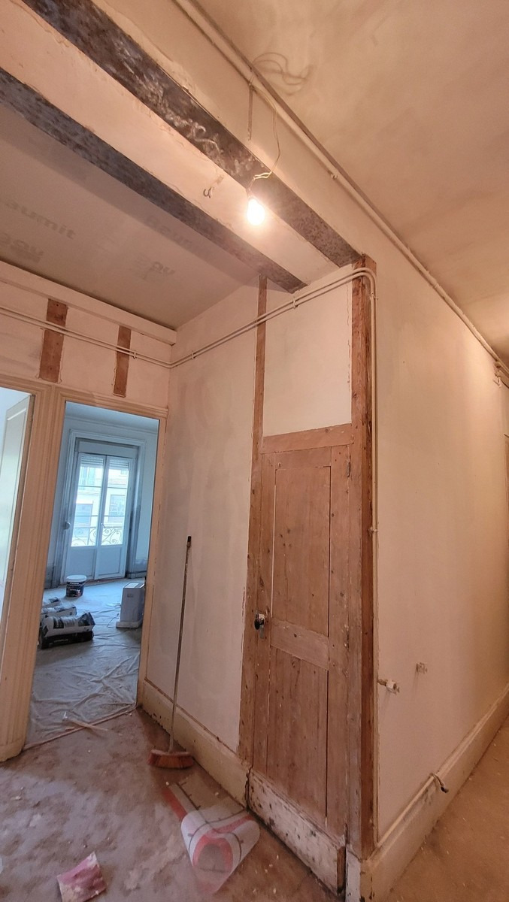
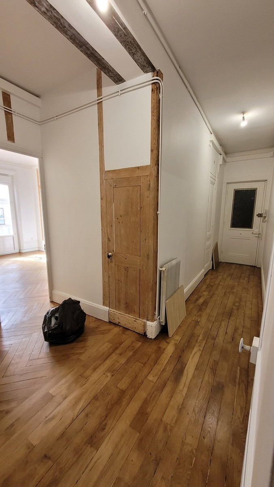
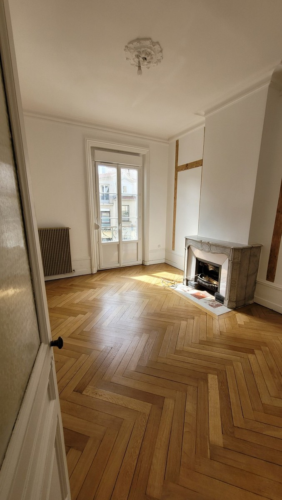
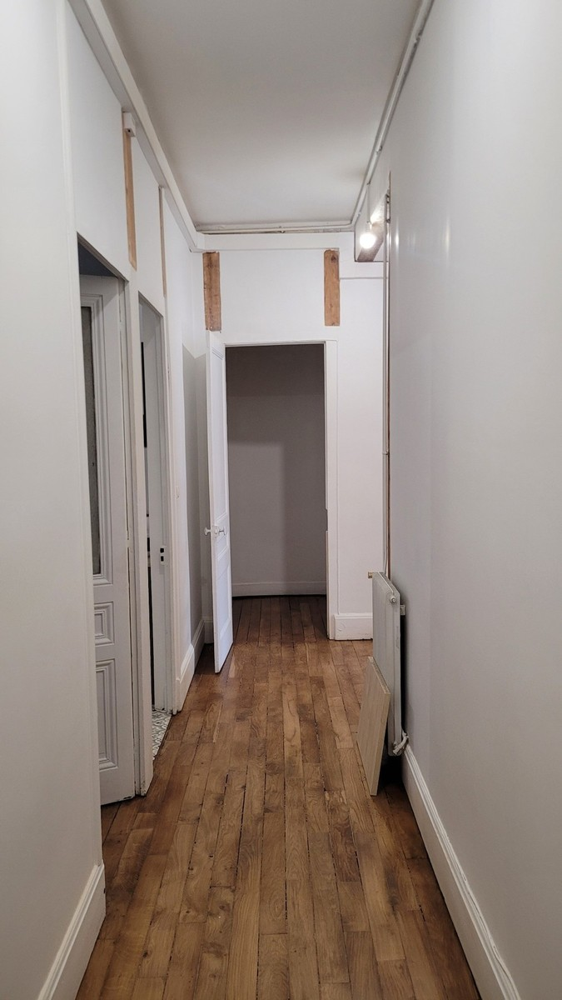

Rénovation complète d’un appartement à Saint-Étienne
Remise en état intérieure d’un appartement ancien avec murs, plafonds et anciennes finitions très abîmés. Le chantier a compris la préparation des supports, les réparations, des reprises en placo, les enduits et le ratissage, puis la peinture des murs, plafonds, portes, boiseries et moulures.
Des supports nécessitant une préparation importante
Les murs, plafonds et anciennes finitions nécessitaient une remise en état avant toute mise en peinture. Les parties non adhérentes ont été déposées ou grattées et les supports ont été préparés pour les réparations.

{kind=link}

Préparer avant de peindre
Après la dépose et le grattage des anciennes peintures ou revêtements, les murs et plafonds ont été réparés. Des reprises en placo ont été réalisées là où elles étaient nécessaires, puis les supports ont reçu les enduits, le ratissage et le ponçage avant impression.
- Dépose et grattage des anciennes finitions
- Réparation des murs
- Réparation des plafonds fissurés ou abîmés
- Reprises et rebouchages en placo
- Enduits et ratissage
- Ponçage des supports
- Impression / sous-couche
- Peinture des murs
- Peinture des plafonds
- Préparation et peinture des portes, boiseries et moulures
Appartement ancien à remettre en état
Envoyez la commune, quelques photos des murs et plafonds et les pièces concernées pour préparer un devis.
Envoyer ma demandePréparation, reprises et finitions en cours
Les photos suivantes montrent le chantier en cours : protection des éléments existants, reprises de supports et volumes encore en préparation.
{kind=link}

{kind=link}

{kind=link}

Des murs et plafonds remis en état et repeints
Après impression, les murs et plafonds ont été mis en peinture. Les portes, boiseries et moulures ont également été préparées et peintes afin d’obtenir un ensemble homogène tout en conservant le caractère de l’appartement ancien.
{kind=link}


{kind=link}

Un projet de rénovation à Saint-Étienne ?
Pour une remise en état d’appartement, les reprises des supports sont évaluées avant la finition afin d’adapter les étapes de placo, enduit, ratissage et peinture.